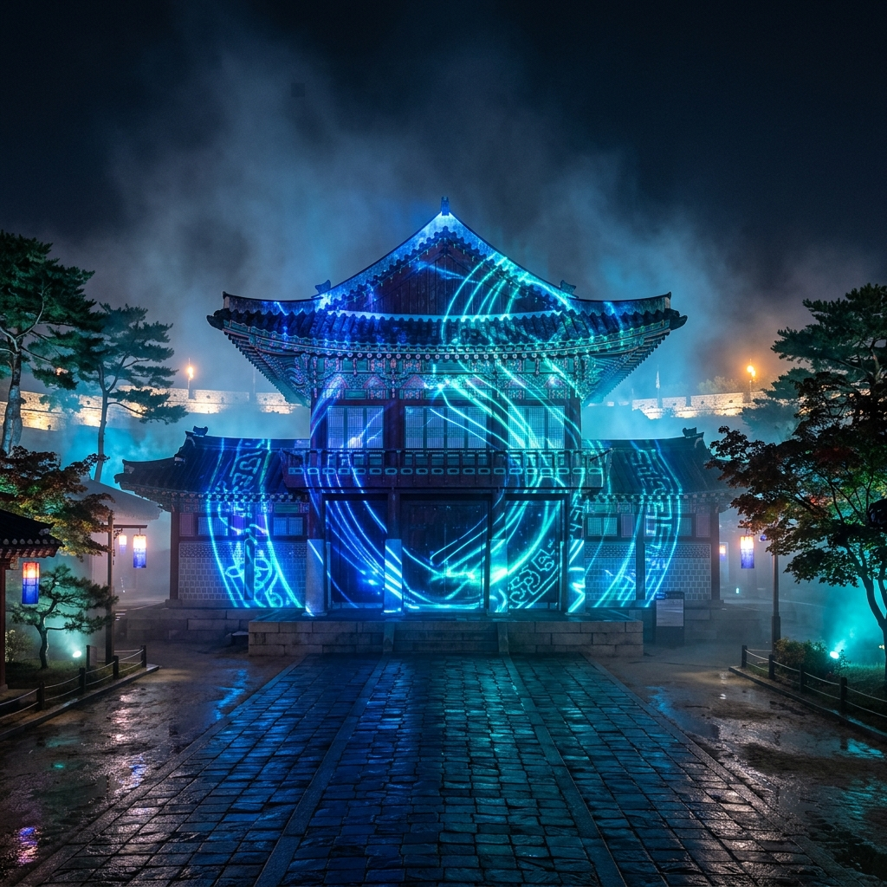
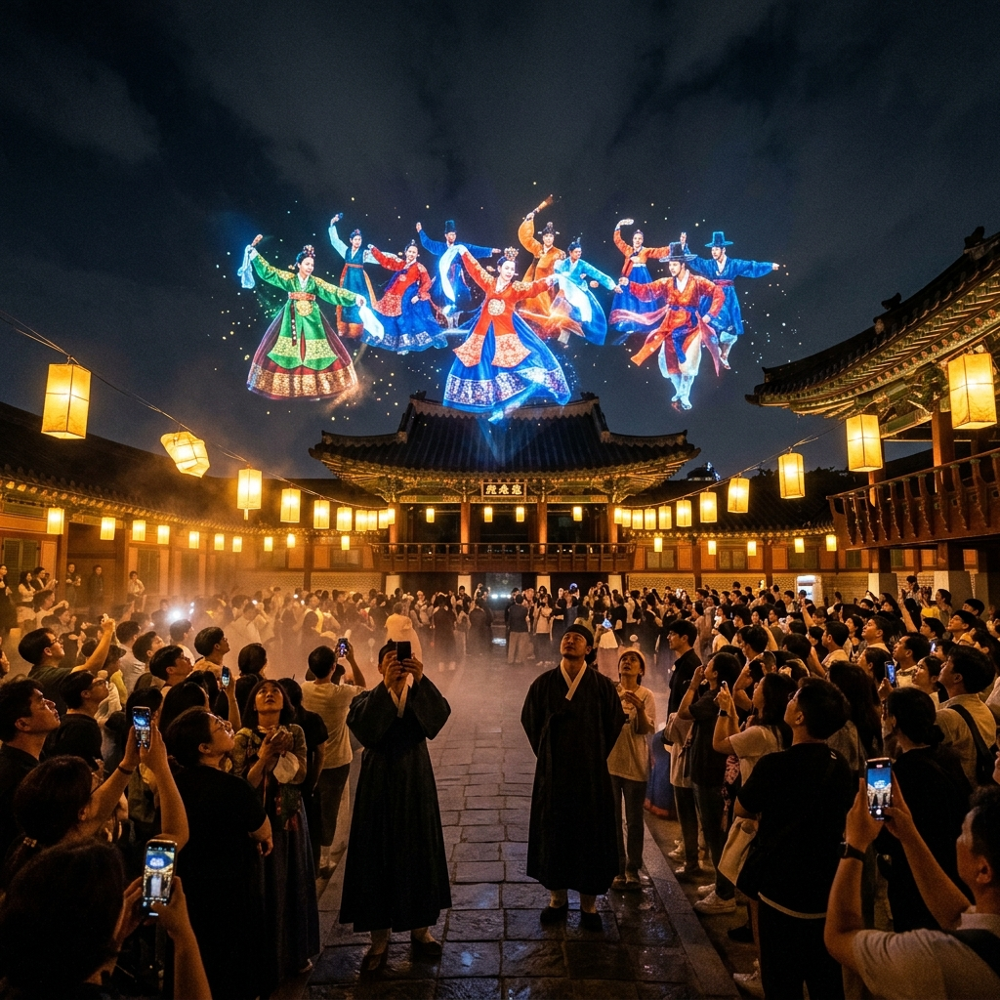
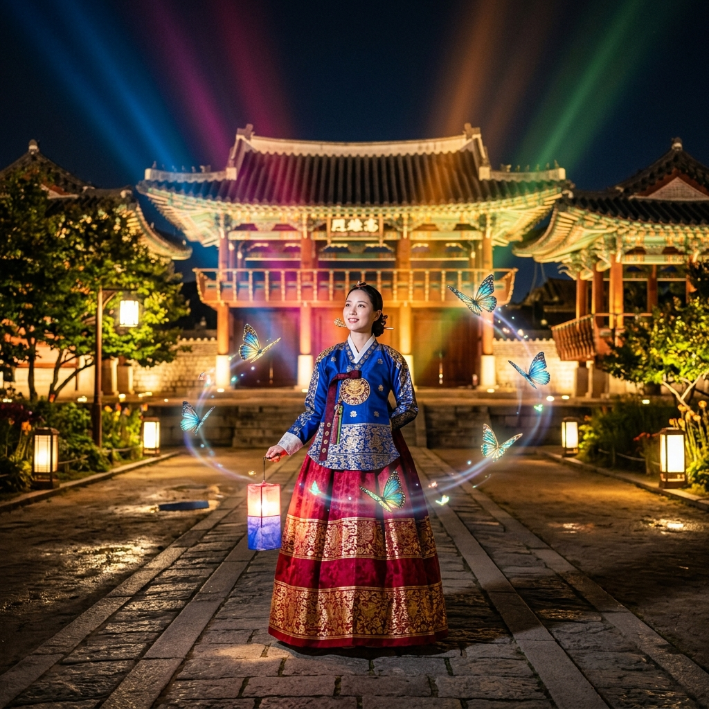

수원 화성행궁 달빛화담 미디어아트 2026
야간 빛 축제 완벽 가이드
밤이 되면 세계문화유산 수원화성이 전혀 다른 얼굴로 변신합니다. 화성행궁 달빛화담(花談)은 조선 정조 임금이 사랑한 행궁에 첨단 미디어아트를 입혀, 역사와 예술이 만나는 환상적인 야간 경험을 선사합니다. 2026년 5월 1일부터 11월 1일까지 매주 금·토·일 저녁에 문을 여는 이 행사는 수도권 최고의 야간 나들이 명소로 이미 입소문이 퍼졌습니다. 3D 홀로그램, 레이저 쇼, 나비 드론까지 — 이 모든 것이 조선의 궁궐 안에서 펼쳐진다는 사실이 믿기지 않으실 겁니다.
🏰 수원 화성행궁, 역사와 예술이 만나는 공간
수원 화성행궁은 조선 제22대 임금 정조가 아버지 사도세자의 묘소인 현륭원을 참배하기 위해 수원을 방문할 때 머물던 임시 궁궐입니다. 1789년(정조 13년)에 처음 지어진 이 건물은 우리나라 행궁 중 가장 규모가 크고 보존 상태가 뛰어난 곳으로, 봉수당·장락당·낙남헌 등 수십 채의 건물이 웅장하게 늘어서 있습니다.
정조는 이곳에서 어머니 혜경궁 홍씨의 회갑연을 열었고, 각종 활쏘기 행사와 과거 시험을 치르며 백성과 소통했습니다. 당시 행궁 주변에는 화성 성곽이 둘러싸여 있었으며, 오늘날 유네스코 세계문화유산으로 등재된 수원화성의 핵심 공간입니다. 낮에는 역사 탐방지로, 밤에는 빛과 기술의 무대로 이중의 매력을 발산하는 이곳이 2026년 봄부터 다시 화제의 중심에 서게 되었습니다.
달빛화담은 단순한 조명 행사가 아닙니다. 역사적 맥락을 살린 스토리텔링과 최신 기술의 융합이 이루어지는 프로그램으로, 관람객들이 정조 시대의 공기를 온몸으로 느끼며 첨단 예술을 체험할 수 있도록 치밀하게 설계되었습니다.

[화성행궁 야간 미디어아트 전경] / AI 생성 이미지
✨ 달빛화담 4대 테마 공간 완전 해설
달빛화담은 화성행궁 내부를 4개의 테마 공간으로 나누어 관람객이 마치 하나의 이야기 속을 걸어가는 듯한 몰입 경험을 만들어냈습니다. 각 공간은 전통 미학과 현대 기술이 절묘하게 어우러지며, 관람 시간만 약 60~80분이 소요될 정도로 풍성한 볼거리를 제공합니다.
① 환영의 빛 — 행궁 정문인 신풍루를 지나면 첫 번째 세계가 펼쳐집니다. 화려한 LED 조명이 행궁의 외벽을 물들이며, 방문객을 정조 시대로 초대하는 상징적인 공간입니다. 수천 개의 조명이 별처럼 쏟아지는 순간은 입장 첫 1분부터 감탄을 자아냅니다.
② 몰입의 빛 — 봉수당과 낙남헌 사이 공간에서 구현되는 대형 3D 홀로그램 쇼입니다. 정조 임금과 혜경궁 홍씨의 이야기가 홀로그램으로 재현되고, 음향과 레이저가 결합하여 관람객들은 18세기 궁중 행사 현장에 직접 들어온 듯한 착각을 경험합니다.
③ 놀이마당 — 어린이와 가족 단위 방문객을 위한 인터랙티브 체험 구역입니다. 나비 드론이 실제로 날아다니는 가운데 AR(증강현실) 놀이 부스, 전통 탈 착용 포토존, 정조 대왕 의상 체험 등 다양한 참여형 콘텐츠가 가득합니다.
④ 사색의 공간 — 장락당 후원에 조성된 조용한 힐링 존입니다. 잔잔한 음악과 함께 달빛 윤무 사진관이 운영되며, 전통 의상을 착용하고 궁궐 야경을 배경으로 고품질 사진을 촬영할 수 있습니다. SNS 인생샷을 원하신다면 이 공간에서 대기 시간을 감수하고 촬영하시길 강력히 추천합니다.
📅 2026년 운영 일정 및 예매 정보
달빛화담의 운영 일정은 정기 시즌과 특별 시즌으로 나뉩니다. 2026년 정기 시즌은 5월 1일(금)부터 11월 1일(일)까지로, 매주 금요일·토요일·일요일 저녁에만 진행됩니다. 평일에는 일반 낮 관람만 가능하므로 반드시 주말 방문을 계획하세요.
| 구분 | 내용 |
|---|
| 운영 기간 | 2026년 5월 1일 ~ 11월 1일 |
| 운영 요일 | 매주 금·토·일 (평일 미운영) |
| 야간 운영 시간 | 일몰 후 ~ 오후 9시 30분 (최종 입장 오후 9시) |
| 주소 | 경기도 수원시 팔달구 정조로 825 화성행궁 |
| 문의 | 수원문화재단 031-290-3612 |
| 한복 착용자 | 무료 입장 |
| 만 6세 이하 | 무료 입장 |
예매는 수원문화재단 공식 홈페이지(swcf.or.kr) 또는 네이버 예약을 통해 사전 구매가 가능하며, 성수기(6~8월) 주말에는 현장 매표가 어려울 수 있으니 최소 1주일 전 온라인 예매를 권장합니다. 5월 초·중순은 아직 비교적 여유가 있어 당일 방문도 가능한 경우가 많습니다.
🚗 교통 및 주차 완전 정리
수원 화성행궁으로 가는 방법은 지하철, 버스, 자가용 등 다양합니다. 가장 편리한 방법은 지하철 1호선 수원역에서 버스나 택시를 이용하는 것입니다. 수원역에서 행궁동까지는 약 15~20분 거리입니다.
🚇 대중교통 이용 시
수원역(1호선·경부선)에서 11번, 13번, 36번, 300번 버스 탑승 후 화성행궁 정류장 하차. 약 20분 소요. 수원역에서 택시 탑승 시 약 10분, 기본요금 수준.
🚗 자가용 이용 시
수원 IC 또는 동수원 IC에서 팔달문 방향으로 진입. 화성행궁 인근 주차장으로는 ① 행궁광장 주차장(유료, 약 300면), ② 화성행궁 서문 주차장, ③ 장안공원 주차장을 추천합니다. 주말 야간에는 주차 공간이 빠르게 소진되므로, 오후 6시 이전 도착을 목표로 하세요.
화성행궁 주변은 행궁동 골목 음식거리가 인접해 있어 관람 전 저녁 식사를 해결하기에도 좋습니다. 이른 저녁을 먹고 여유롭게 야간 관람에 입장하는 루틴을 추천드립니다.

[화성행궁 내부 홀로그램 쇼 장면] / AI 생성 이미지
📸 SNS 인생샷 명당 TOP 5
달빛화담은 어느 각도에서 촬영해도 아름답지만, 특히 인스타그램과 블로그에서 인기를 끄는 포토 스팟 TOP 5를 정리해 드립니다.
① 신풍루 정면 — 행궁 정문 신풍루에 레이저 빛이 퍼지는 장면은 달빛화담을 대표하는 시그니처 컷입니다. 입장 직후 줄을 서지 않고 먼저 이곳에서 촬영하세요. 입장 직후 10분이 가장 여유 있는 시간대입니다.
② 봉수당 앞마당 — 3D 홀로그램 쇼가 펼쳐지는 메인 무대 정면. 쇼 시작 전 앞자리를 선점하면 정면 촬영이 가능합니다. 인파가 많으므로 삼각대 사용 시 주변 배려가 필요합니다.
③ 달빛 윤무 사진관 — 사색의 공간에 위치한 유료 촬영 부스로, 전통 의상(포함 또는 유료 대여)을 착용하고 궁궐 야경을 배경으로 전문 조명 아래 촬영합니다. 미리 예약하는 것을 추천드립니다.
④ 장락당 후원 복도 — 한쪽 면이 LED 조명으로 가득 찬 복도를 걸어가는 장면은 마치 외국의 미술관처럼 세련된 분위기를 연출합니다.
⑤ 나비 드론 비행 구역 — 놀이마당 상공에 형형색색의 나비 드론이 날아다니는 장면은 동영상 촬영 시 특히 효과적입니다. 슬로모션 모드로 촬영하면 환상적인 영상을 남길 수 있습니다.
🍽️ 주변 맛집 및 관광지 연계 코스
화성행궁 주변 행궁동 일대는 수원 도시 재생의 성공 사례로, 개성 있는 카페와 식당들이 밀집해 있습니다. 달빛화담 관람 전후로 들르기 좋은 명소들을 소개해 드립니다.
관람 전 저녁 식사
행궁동 골목에는 수원 갈비 전문점, 순대국밥, 한식 뷔페 등 다양한 식당이 밀집해 있습니다. 특히 수원 왕갈비는 이 지역의 대표 음식으로, 관람 2시간 전쯤 여유롭게 식사하고 행궁으로 향하는 코스를 추천합니다.
관람 후 야식 및 카페
관람 후 행궁광장 주변 야간 카페에서 전통차나 디저트를 즐기세요. 최근에는 전통 한옥을 개조한 분위기 있는 카페들이 늘어나 달빛화담 관람 후 여운을 이어가기 좋습니다.
낮에 여유가 있다면 수원화성 성곽 일주 트레킹(약 5.7km, 2~3시간)도 함께 계획해 보세요. 팔달산 정상에서 바라보는 수원 시내 풍경과 화성행궁 전경은 낮에 즐기는 특별한 경험입니다.
💡 관람 꿀팁 및 주의사항
달빛화담을 100% 즐기기 위한 실전 팁을 공유합니다.
옷차림 — 5월이라도 야간에는 기온이 뚝 떨어지므로 얇은 겉옷을 반드시 챙기세요. 야간 관람 특성상 어두운 환경에서 이동이 많아 편안한 운동화나 단화를 권장합니다.
한복 착용 혜택 — 한복을 착용하고 방문하시면 입장료가 무료입니다. 수원역 근처나 행궁동에서 한복 대여가 가능하며, 대여 비용은 보통 1~2만 원대입니다. 달빛화담 배경과 한복의 조합은 SNS에서 큰 반향을 일으키고 있습니다.
혼잡 시간대 피하기 — 오후 8시~9시 사이가 가장 붐비는 시간대입니다. 개장 직후인 오후 6시 30분~7시 30분 사이에 입장하면 비교적 여유롭게 관람하실 수 있습니다.
사진 촬영 — 전문 카메라 및 삼각대 사용 시 다른 관람객 불편을 최소화해 주세요. 일부 구역은 플래시 촬영이 제한될 수 있습니다.

[한복 착용 방문객과 나비 드론 포토존] / AI 생성 이미지
🎪 9월 미디어아트 본 축제 미리보기
달빛화담이 상설 야간 프로그램이라면, 수원화성 미디어아트 축제는 연중 최대 규모의 화성 야간 이벤트입니다. 2026년에는 9월 19일부터 10월 6일까지 약 18일간 진행될 예정으로, 수원화성 성곽 전체를 활용한 대형 프로젝션 맵핑이 핵심 프로그램입니다.
성곽 외벽에 펼쳐지는 대형 미디어 파사드는 가로 수백 미터에 달하며, 정조 시대의 이야기를 웅장한 영상으로 풀어냅니다. 드론 군집 비행 쇼, 불꽃 퍼포먼스, 전통 타악 공연이 함께 어우러져 단 하룻밤에 수원화성의 역사와 예술을 모두 경험할 수 있습니다. 가을 황금빛 달밤 아래 펼쳐지는 빛의 향연이므로, 9월 이후 방문 계획이 있다면 미디어아트 축제 일정을 꼭 확인하세요.
달빛화담 + 미디어아트 축제를 시즌별로 방문하면, 같은 화성행궁을 완전히 다른 방식으로 두 번 경험하는 색다른 즐거움이 있습니다.
🗺️ 수원화성 성곽 낮 관람 연계 코스
수원 방문을 더욱 풍성하게 즐기고 싶다면, 야간 달빛화담 관람 전 낮에 수원화성 성곽을 걸어보세요. 총 5.7km의 성곽 길은 4개의 성문(장안문·화서문·팔달문·창룡문)과 4개의 각루, 2개의 봉돈, 5개의 치성 등 조선 시대 첨단 군사 건축물들이 이어집니다.
전 구간을 걷기 어렵다면 화성행궁에서 출발하여 서장대까지 왕복(약 2km)하는 단축 코스를 추천합니다. 서장대에서 내려다보이는 수원 시내 전경과 행궁 지붕들의 조화는 어느 공원보다 아름답습니다. 혹서기나 우천 시에는 화성어차(궤도차)를 이용하면 성곽 외부를 차량으로 돌아볼 수 있어 체력 부담을 줄일 수 있습니다.
관광 코스를 요약하면: 수원역 도착 → 점심 식사 → 화성어차 탑승 또는 성곽 도보 산책 → 행궁동 커피 타임 → 달빛화담 야간 관람의 순서가 하루를 완벽하게 채울 수 있는 황금 루틴입니다.
❓ 자주 묻는 질문 (FAQ)
Q. 비 오는 날에도 운영하나요?
A. 기본적으로 우천 시에도 운영하나, 강풍 또는 폭우 등 기상 악화 시에는 당일 취소될 수 있습니다. 방문 당일 수원문화재단 SNS나 공식 홈페이지를 통해 운영 여부를 확인하세요.
Q. 유모차 및 휠체어 입장이 가능한가요?
A. 화성행궁 내부 일부 구간은 계단이 있어 휠체어 접근에 제한이 있을 수 있습니다. 행궁 안내소에 사전 문의하시면 이동 가능 경로 안내를 받을 수 있습니다.
Q. 관람 소요 시간은 얼마나 되나요?
A. 4개 테마 공간 전체를 여유롭게 관람하는 데 약 60~80분이 소요됩니다. 달빛 윤무 사진관 촬영이나 체험 활동 참여 시 추가 시간이 필요합니다.
Q. 주차 요금은 얼마인가요?
A. 행궁광장 주차장 기준 소형 승용차 30분당 약 300~500원 수준이나, 주말 야간에는 혼잡도에 따라 운영 방식이 달라질 수 있으니 현장 안내를 따르세요.
#수원화성행궁
#달빛화담
#화성미디어아트
#수원야간관광
#수원여행
#경기도여행
#야간나들이
#미디어아트
#수원가볼만한곳
#세계문화유산